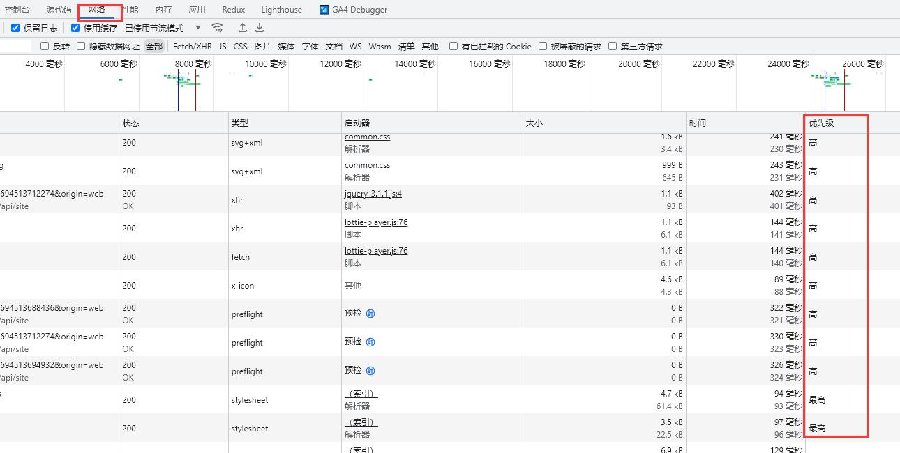
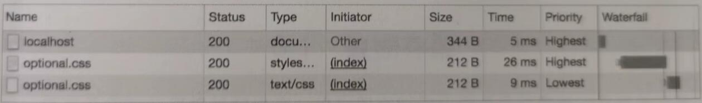

优先级
浏览器基于自身的启发式算法，会对资源的重要性进行判断来划分优先级，通常从低到高为：Lowest、Low、High、Highest。
比如，在 <head> 标签中，CSS 文件通常具有最高的优先级 Highest，其次是 <script> 标签所请求的脚本文件，但当 <script> 标签带有 defer 或 async 的异步属性时，其优先级又会降为 Low。我们呢通过浏览器的控制台可以看到浏览器对资源进行的优先级划分。

预加载
使用 <link rel="preload"> 标签告诉浏览器当前所指定的资源，应该拥有更高的优先级，例如：
<link rel="preload" as="script" href="important.js" />
<link rel="preload" as="style" href="critical.css" />
这里通过 as 属性告诉浏览器所要加载的资源类型，
要注意：<link rel="preload"> 会强制浏览器进行预加载，它与其他资源的提示不同，浏览器对此是必须执行而非可选的。
如果预加载指定的资源在 3s 内未被当前页面使用，则浏览器会在开发者工具的控制台中进行警告提示，该警告务必要处理。
解下来看两个使用实例：字体的使用和关键路径渲染
通常字体文件都位于页面加载的若干个 CSS 文件的末尾，但考虑为了减少用户等待文本内容的加载时间，以及避免系统字体与偏好字体发生冲突，就必须提前获取字体，
<link
rel="preload"
as="font"
crossorigin="crossorigin"
type="font/woff2"
href="myfont.woff2"
/>
[注]：这里的 crossorigin 属性非常重要，如果缺失该属性，浏览器不会对指定的字体进行预加载。
前面讲过页面渲染生命周期时，提到过关键渲染路径，其中涉及首次渲染之前必须加载的资源（比如 CSS 和 JavaScript 等），这些资源对首屏页面渲染来说是非常重要的。以前通常建议的做法是把这些资源内联到 HTML 中，但对服务端渲染或对页面而言，这样做很容易导致带宽浪费，
所以使用 <link rel="preload"> 对单个文件进行预加载，除了能很快的请求资源，还能尽量利用缓存，
其唯一的缺点是可能会在浏览器和服务器之间发生额外的往返请求，因为浏览器需要加载解析 HTML 后，才会知道后续资源请求情况，其解决方式可以利用 HTTP2 的推送。
预连接
通常在速度较慢的网络环境中建立连接会非常耗时，如果建立安全连接将更加耗时。
其原因是整个过程中会涉及 DNS 查询、重定向和与目标服务器之间建立连接的多次握手，所以若是能提前完成上述这些功能，则会给用户带来更加流畅的浏览器体验。同时，由于建立连接的大部分时间消耗是等待而非数据交换，这样也能有效优化带宽的使用情况。
解决方案是所谓的预连接：
<link rel="preconnect" as="style" href="https://example.com" />
通过 <link rel="preconnect"> 标签指令，告知浏览器当前页面将与站点建立连接，希望能尽快的启动该过程，
虽然这么做的成本较低，但会消耗宝贵的 CPU 时间，特别是在建立 HTTPS 安全连接时。如果建立好连接后的 10s 内，未能及时使用连接，那么浏览器关闭该连接，之前为建立连接所消耗的资源相当于白费了。
另外，还有一种与预连接相关的类型 <link rel="dns-prefetch">，也就是常说的 DNS 预解析，它仅用来处理 DNS 查询，由于受到浏览器的广泛支持，且缩短了 DNS 的查询时间的效果显著，所以使用场景十分普遍
<link rel="dns-prefetch" href="//example.com" />
预提取
利用机会让某些非关键操作能够更早发生。
这个过程的实现方式是根据用户已经发生的行为判断其接下来的预期行为，告知浏览器稍后可能需要的某些资源。
也就是当页面加载完成后，且在带宽可用的情况下，这些资源将以 Lowest 的优先级进行提起。
显而易见，预提取最适合的场景是为用户下一步可能进行的操作做好必要的准备，如在电商品平台的搜索框中查询某商品，可预提取查询结果列表中的首个商品详情页，或者使用搜索查询时，预提取查询结构的分页内容的下一页：
<link rel="prefetch" href="page-2.html" />
需要注意的是，预提取不能递归使用，比如在搜索查询的首页 page-1.html 时，可以预提取当前页面的下一页 page-2.html 的 HTML 内容，但对其中所包含的任何额外资源不会提前下载，除非有额外明确指定的预提取。
另外，预提取不会降低现有资源的优先级，比如在如下 HTML 中：
<html>
<head>
<link ref="prefetch" href="style.css" />
<link ref="stylesheel" href="style.css" />
</head>
<body></body>
</html>
可能你会觉得对 style.css 的预提取声明，会降低接下来的 <link ref="stylesheel" href="style.css" /> 的优先级，但其真实情况是，该文件会被提取两次，第二次可能会使用缓存。

显然两次提取对用户体验来说非常糟糕，因为这样不但需要等待阻塞渲染的 css，而且如果第二次提取没有命中缓存，必然会产生带宽的浪费。所以应该充分考虑。